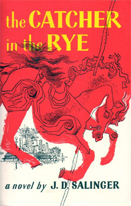

This is my first webpage. The purpose of this webpage is to introduce myself
and show off some information about me. I hope that you will like the design of this structure.
My name is Qin Ling and I am 19 years old. Now, I study at XJTLU as a sophomore and I major in software development. My hometown is Jining, Shandong province, which is a fantastic city with trees and flowers. As a hard-working student, I was always the top student in my middle school and high school. Also, I am lucky that I can study in XJTLU, which is an energetic college and full of young adults.
As for working experience, I volunteered to teach math in a remote mountain village in Yunnan province last year and I finished my internship in our university library. This September I will go to Liverpool university to gain more knowledge and I hope this will be an interesting experience. I do not have a girlfriend but I enjoy my life, that is enough. Finally, I hope my future will be brighter and brighter on account of my hard work.
I have a number of hobbies. Firstly, I like sports, all types of sports, especially basketball and badminton. I have taken part in the basketball game represented my class held last year and we won the third place. Secondly, I love riding bicycle. I enjoy the feel of chasing and I rode to many tourist spots like Jinji Lake and Yangcheng Lake. I plan to ride to my hometown from Suzhou to Jining in summer vacation, 600 kilometers approximately.
In addition, I love traveling when I have spare time. When I am travelling, I can relax myself and eat delicious food. As the saying, to have fun in reading as many books as taking a long journey. I love both reading and travelling, so I can gain more knowledge and acquire wisdom.
I love to listen to music and watch movie, too. Listening to music and watch movie are good ways to relax when you feel exhausted. I like Pop music and several English music best. The list of my favorite music and my favorite movies will be posted on the right side of this webpage.
Finally, in this webpage, I want to recommend some webpage for you. There are kinds of websites which is worth browsing, I will give links in the following part.
| Book names | Book authors | Book pictures | Book links | Book types |
| The Little Prince | Antoine de Saint-Exupéry | The Little Prince | Novel | |
| The Catcher in the Rye | J. D. Salinger. |  | The Catcher in the Rye | Novel |
| Norwegian wood | Haruki Murakami |  | Norwegian Wood | Novel |
| There are also other famous books like Harry Potter Series, Romeo and Juliet, Pride and Prejudice etc. | ||||